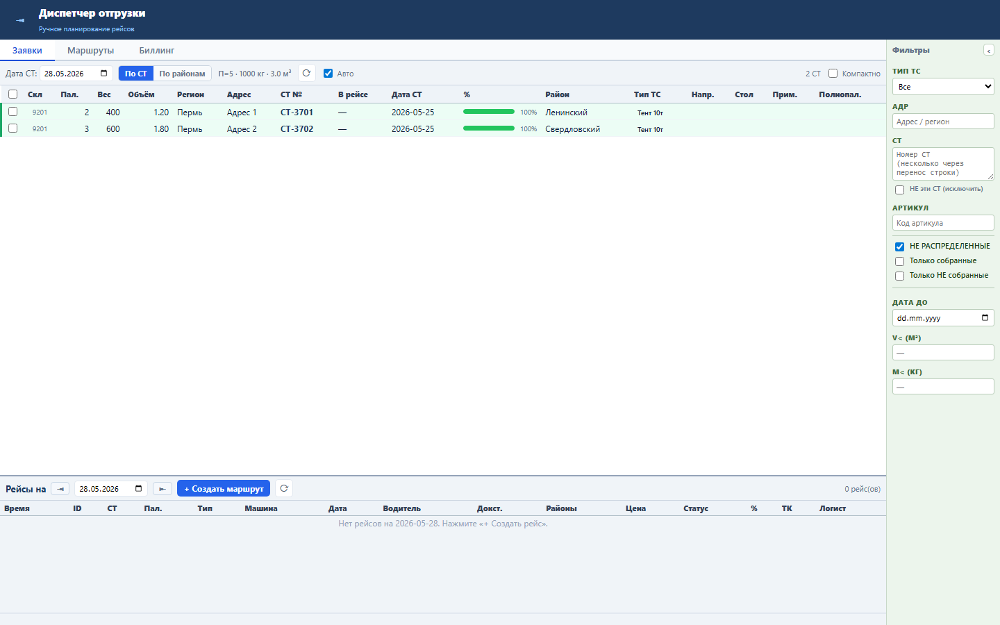
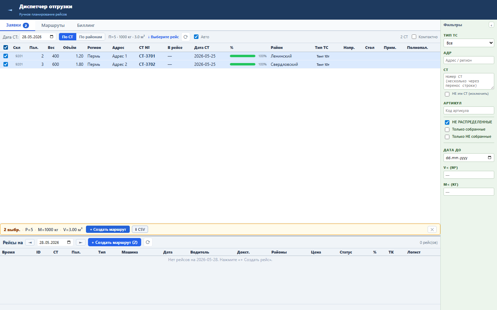

Блок ускоряет массовую работу со свободными СТ и поддерживает актуальность данных на экране диспетчера.
Выделение хранится в клиентском selectedStNums. Автообновление раз в 60 секунд перечитывает свободные СТ, рейсы и кластеры, если нет диалогов или редактирования.
Диспетчер одним кликом выделяет все видимые СТ и может включать или отключать автообновление.


Проверка: functional, UI smoke и load gate пройдены.